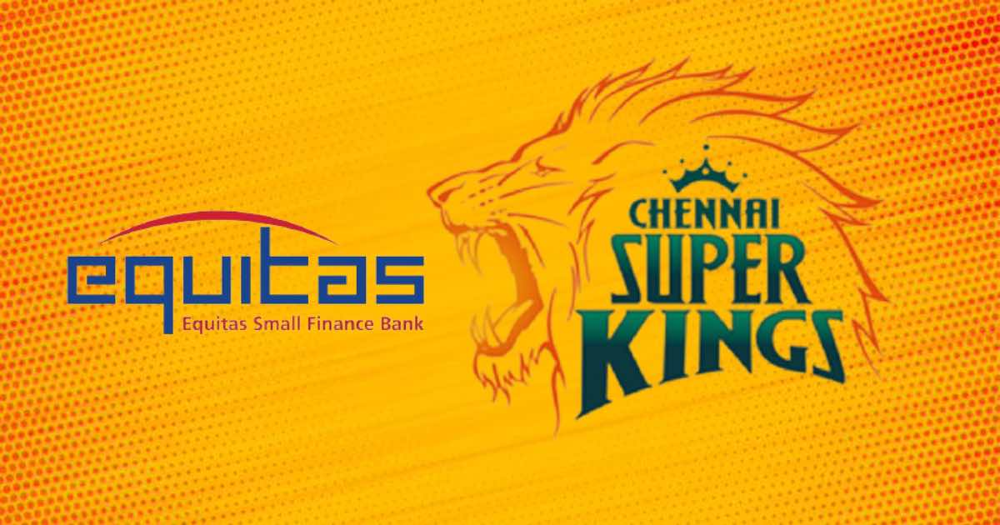
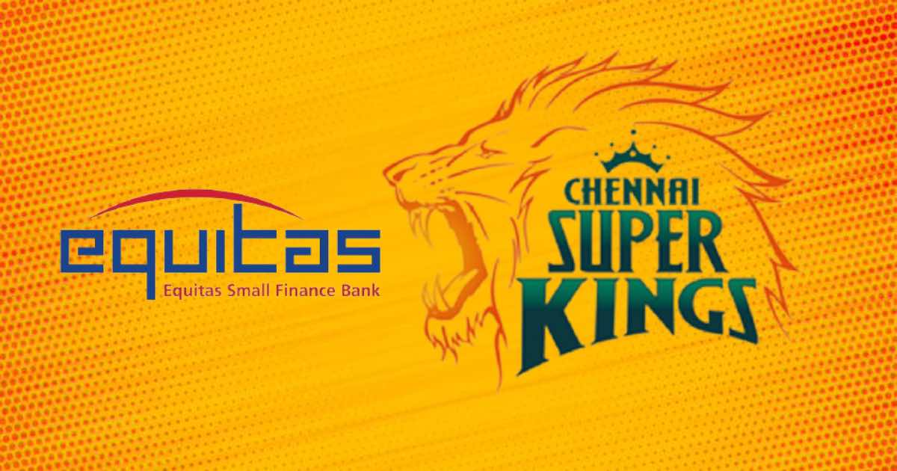

History
The IPL started in 2008 as a city-based T20 cricket league and rapidly became the world’s most popular and lucrative cricket tournament. It changed the game by attracting global star players and a massive, diverse audience.
- Background
- Foundation
- Expansions and termination
The IPL was modeled after international sports leagues, aiming to blend entertainment and cricket excellence. Its foundation was set by the BCCI to strengthen Indian cricket and attract a new fan base.
Launched with an innovative auction system, the IPL attracted domestic and international players. Massive marketing, franchise bidding, and star buy-ins ensured instant attention and visibility.
The league saw the addition and removal of several teams as the tournament evolved. Expansions aimed to tap new markets, while terminations often stemmed from financial or regulatory reasons.
Administration
The Board of Control for Cricket in India (BCCI) oversees IPL through a Governing Council, managing auctions, schedules, and implementing league rules, thus ensuring transparency and excitement in the league.


Organisation
The league’s format uses group-stage and playoffs, featuring 10 teams, a set number of squad members, and limits on overseas players. Unique innovations like the “impact player” rule make IPL games unpredictable and thrilling.
- Tournament format
- Player acquisition, squad composition and salaries
- Match rules
- Prize money
Teams first play round-robin matches in groups, followed by knockout playoff matches. The top four qualify for the playoffs, culminating in a grand final for the championship.
Players are chosen through intense annual auctions governed by salary caps and squad rules. Franchises strategize to create the most balanced and competitive teams.
The league employs T20 International standards for gameplay, field restrictions, and umpiring. Subtle tweaks like Impact Player rules add a unique twist to each season.
Winning teams receive significant prize money, making the stakes high for players and franchises. Financial incentives also reward fair play and individual performances.
Team
IPL features prominent current teams like Mumbai Indians and Chennai Super Kings,along with defunct teams from past seasons. Each franchise boasts its own identity, loyal fans, and a carefully selected squad of top cricketers.
- Current teams
- Defunct teams
- Timeline
The IPL currently has 10th exciting teams representing different Indian cities and regions. They are the heartbeat of the league, inspiring intense local and national support.
Some teams, like the Kochi Tuskers Kerala, became defunct due to financial or administrative reasons. Their brief journeys remain memorable for their impact and unique stories.
The IPL timeline is filled with dramatic finals, record-setting seasons, and memorable player milestones. Each year adds new achievements and stories to the league’s rich history.
Tournament seasons and results
Each season brings new champions, with Mumbai Indians and Chennai Super Kings leading in titles. The league is known for its intense matches and moments that keep fans anticipating every year’s result.
- Performance in the IPL by title
- IPL season results
Mumbai Indians and Chennai Super Kings have dominated, winning multiple titles over the years. Each season, new teams try to break their dominant streaks and claim the trophy.
Season results are determined by points tables, playoffs, and a grand finale. They are a testament to strategy, skill, and the ability to perform under pressure.
Teams performance
Teams are ranked by points and net run rate during the group stage, and only the top four qualify for the playoffs. Sudden shifts in performance and ranking can happen in a single match, making the league dynamic.
- League stage positions
League stage standings are determined by points and net run rate across all group matches. Maintaining a high position is key for qualification and home advantage in playoffs.
Awards
Orange Cap (most runs), Purple Cap (most wickets), Emerging Player, and Fair Play are top IPL awards. These recognize the best players and encourage both aggressive play and sporting spirit.
- Orange Cap
- Purple Cap
- Most Valuable Player
- Faimlay Award
- Emerging player award
- Most scores Award
Awarded to the tournament’s top run-scorer, signifying consistency and dominance with the bat. The Orange Cap holder changes often as the season progresses.
Given to the leading wicket-taker, the Purple Cap celebrates bowling excellence. Bowlers compete fiercely to top the leaderboard for this honor.
This award goes to the player who makes the biggest overall impact throughout the season. It is based on batting, bowling, and fielding statistics.
Reserved for the team with the best conduct, judged on discipline and sportsmanship. It highlights the spirit of cricket beyond just wins and losses.
Recognizes the most impressive young player of the season. It is a coveted honor for up-and-coming cricketing talent.
This recognizes the batsman with the most 50s or 100s in the season. It reflects consistency and match-winning innings.
Financials
IPL generates huge revenue through sponsorships, broadcasting rights, and merchandising, with the 2025 winner earning ₹20 crore. The league showcases the commercial power of cricket globally.
 
- Title Sponsorship
- Payments to foreign national boards
- Brand value
Major brands vie for title sponsorship, bringing in substantial revenue and visibility. The sponsor’s name is central to all league branding.
IPL franchises compensate national boards for releasing international players. These arrangements ensure regulatory compliance and player availability.
Each IPL team’s brand value grows through performance, marketing, and fan engagement. The league as a whole is among the most valuable sports properties globally.
Broadcasting
IPL matches are broadcast worldwide via major networks like Sony and Star India, also streaming on various platforms. This global reach allows millions to watch live games from anywhere.
- Sony and WSG (2008-2017)
- Star India(2018-2022)
- 2023-2027
- International broadcasters
Sony and WSG secured the original broadcast rights, giving IPL its first big TV platform. Their coverage set the standard for high-quality sports presentations.
Star India took over, expanding digital streaming and global reach. Their innovations brought new viewers and interactive experiences to IPL fans.
The next cycle saw intense bidding and more players in digital rights. Fans enjoy matches across multiple platforms, increasing accessibility and competition.
Worldwide distributors broadcast IPL in over 100 countries. International deals help IPL connect with the global cricket community.
Controversy
The IPL has faced major controversies such as spot-fixing scandals and ownership disputes. Despite challenges, strong reforms ensure IPL remains entertaining and credible.
- 2012 and 2013 IPL spot facing and betting match
- Sponsorship
Major spot-fixing scandals in these years led to suspensions and investigations. Reforms followed, increasing oversight and anti-corruption measures.
Sponsorship controversies sometimes occur, involving ethical questions or policy changes. The league adapts to maintain credibility and strong partnerships.